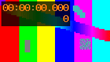

M1 · Infinite CSS animation
Pulse
Shimmering banner
NEW
This panel fades in once. With Sukoon it is simply there.
M2 · The site's own reduced-motion version
CSS: full-motion version
JS matchMedia: not checked yet
Cross-origin stylesheet: full-motion version
Linked stylesheet with media="(prefers-reduced-motion: reduce)": inactive

Scripted motion that respects matchMedia
M3 · Shadow DOM and frames
M4 · Scripted and SVG animation
WAAPI loop
WAAPI once
Revealed on scroll (AOS style) 1
Revealed on scroll (AOS style) 2
M6 · Media
M5 · Scroll-linked motion
Scroll-driven CSS animation
State A
M9 · Flash Guard test (gated)
Warning: this test flashes a large mid-grey area five times per second, which fails WCAG 2.3.1. The contrast is deliberately reduced, but do not start it if flashing affects you.